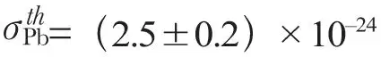
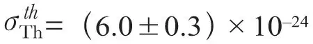
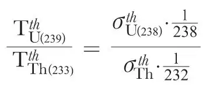
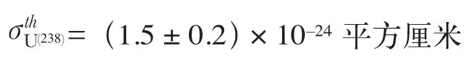
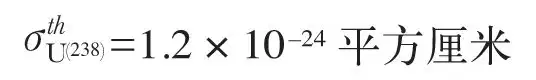

英文
英文迈特纳
编者按
物理学家还没有测量出铀–238对热中子的“俘获截面”，该截面表征热中子被俘获的倾向，它是核链式反应可能性的一个重要参数。小的俘获截面表明有很少中子被俘获，这使得更有可能发生剩下的中子引发裂变的事件。本文中莉泽·迈特纳测量了钍的热中子俘获截面，然后用它估算铀中的相应值。根据尼尔斯·玻尔导出的钍核和铀核β衰变事例比值之间的关系，她宣称这个值与恩里科·费米和卡尔·安德森所报道的值非常接近。 英文
在用中子轰击钍的实验过程中，我们发现，只有能量大于或等于大约2兆电子伏的快中子才能诱发核裂变。这里也存在一个辐射俘获过程，产生了一个半衰期为26分钟的钍的同位素钍–233；而且这一过程具有源自热中子[1]贡献的共振特征。迄今为止，热中子在钍元素中的俘获截面还没能被成功测量。为了测量出这个截面，我们做了下面的实验。 英文
由于可利用的中子源并不是特别的强（100毫克的镭和铍），所以全部实验材料的尺寸都要保持尽量的小。另一方面，为了得到高精度的测量结果，我们必须使用厚度合适的吸收钍片。在科斯特教授的慷慨帮助下，我得到了一个纯度高于99%的金属钍的样品。科斯特教授还提供了纯度最高的镝，我们把它用作探测器。钍样品的形状是一个规则的棱柱形（1.2厘米×1.2厘米×2.96厘米）。镝为一个矩形（1.0厘米×2.7厘米）的薄层（15.7毫克每平方厘米镝），上表面覆盖了一层2微米的“玻璃纸”。为了进行吸收测量，我们把钍直接放在带镉屏或者不带镉屏的镝片上，这样中子轰击时一般就必须通过厚度为1.2厘米的钍片，其相当于13.4克的钍。 英文
具体的实验做法如下。在一个3.8厘米厚的石蜡平板上，挖出一个1.3厘米深的矩形空腔，底部和侧面都覆盖有0.5毫米厚的镉，这样使得热中子只能从上面进入。把这个石蜡板放在另外两个石蜡板的中间，用这种方法组成一个高11.5厘米、底面为25厘米×25厘米的长方体。镝放在被镉屏蔽了的空腔的底部。最上面的石蜡平板里含有一个中子源，中子源距离上表面3.3厘米，这样放置后，中子源就刚好接触到了被镉屏蔽的空腔的上边界。 英文
镝探测器的放射性是由盖革–米勒计数器进行测量的，计数器的壁是厚度为0.1毫米的铝箔，并与一个放大器相连。镝的半衰期被精确地测定为156±3分钟，在所有的实验中，镝都会被强烈照射达到饱和，为了提高测量的精度，对镝放射性强度的衰减要跟踪数个小时。所有的测量都参照着铀的标准进行。对于探测器的被照表面直接覆盖和不覆盖0.5毫米镉这两种情形分别进行辐照测量，可以测定热中子的贡献。在探测器的所有面都有镉层屏蔽的时候，探测到的放射性来源于比热中子快的中子。在这里所使用的实验条件下，其放射性仅为无镉片屏蔽探测器被照表面情形下的9%。 英文
为了测定钍的热中子俘获截面，我们必须考虑到中子与钍核之间各种各样的相互作用。快中子的裂变截面很小几乎可以忽略。快中子的辐射俘获截面同样如此。因此，对于快中子来说，我们只需要考虑它的散射截面。由于实验安排中吸收体直接放在尺寸几乎相等的探测器的上面，可以认为实际上所有的散射中子在辐照中均是有效的，也就是说，这个散射截面在测量中不起作用。实验证实了这一推测。当探测器的两个面全被镉遮盖时，在实验误差2%~3%允许的范围内，实验中测得的有钍和没有钍时（或者有铅和没有铅）的放射性是一样的。为了进一步测定非弹性散射的影响，我们把镉先后放在探测器的被照表面（钍放在该表面之上）和中子源与钍吸收器的中间，分别对它进行了研究。结果显示没有任何的差别，因此，正如人们预测的那样，非弹性散射并不产生可观测到的热中子。 英文
这些研究结果表明，在实际使用的条件下，热中子的散射也是可以忽略的，因此由钍吸收体导致的放射性的减少（28%左右）仅仅是由辐射俘获过程引起的。为了得到更直接的证明，我们对在金属铅中的吸收进行了测量。铅吸收体的大小实际上和钍吸收体相同，但是为了使单位面积上吸收体原子核的数量相同，密度为10.6的棱柱形铅铸件的厚度要小一些（1.10厘米）。 英文
当然，在测量截面的过程中，热中子的角分布也被考虑在内，而且根据弗里施[2]提供的数据进行了倾斜度校正（最大角度接近70°）。 英文
经计算，铅的热中子总截面为

平方厘米。这与弗莱施曼[3]在γ射线测量中得到的结果2.3×10–24平方厘米是非常吻合的。因此我们可以肯定，对于钍来说，在测量中也仅仅是辐射俘获截面起了作用。所测得的结果为
平方厘米，这个值可以用来估算铀–238的俘获截面。在这种同位素中，正如玻尔[4]强调的，热中子不会诱发裂变。因此，当同样少量的铀和钍在相同的条件下受到中子的轰击时，结果就会相应地产生铀–239和钍–233。显然，考虑到它们的半衰期几乎都是相同的，如果假设产生β射线的效率也近似相等，那么由热中子（修正为相同数量的原子核）引起的β射线的放射性一定正比于相应的截面：
在达勒姆早期的测量中，我找到了这个比值为1/4.15。应用上面钍俘获截面的值，得出铀–238的俘获截面应为：

安德森和费米[5]通过直接测量由已知数量的热中子引起的铀–239的β射线强度，得出：

考虑到这种类型的测量存在较大的误差，我们认为结果的一致性还是很好的。 英文
在此对科学院的资金支持表示衷心的感谢，尤其要感谢西格巴恩教授，他慷慨地为我提供了实验设备。 英文
（胡雪兰 翻译；朱永生 审稿）